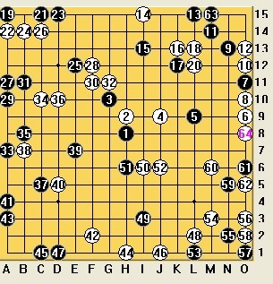
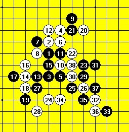
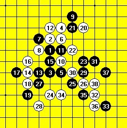

黑VCF
#1 黑VCF 作者：茗弈宽容 发表时间：2010-10-26 12:37:22

一道很晕很晕的题
#2 Re:黑VCF 作者：茗弈宽容 发表时间：2010-10-27 10:33:38
没人来做吗这题？有威望的哟。#3 Re:黑VCF 作者：米 发表时间：2010-10-27 12:00:22
本局黑从左下走起，蔓延到右下，然后是左上，最后是右上，第225手在右上角那个点摆出五连（除非白224手不配合抢那个角，黑就只好往左五连）。摆一遍太累就不摆了。这类题主要就是保持病毒式蔓延和注意解禁手。
［ 茗弈小刀 于 2010-10-27 13:28:09 时奖励此帖[金币加 100 威望加1］
#4 Re:黑VCF 作者：茗弈宽容 发表时间：2010-10-27 13:24:06
小米老师正好有个棋请教：=======上图对应的爱五子棋谱代码如下，以便你拆解：========
h8h7h10i6i10i7g7g8j5i9h9h6g10f10i8f9e10f11f12k6j6j8k9h12j11k11
======================================================27下哪比较好？后边黑能占优吗？
#5 Re:Re:黑VCF 作者：米 发表时间：2010-10-27 22:35:49
=======上图对应的爱五子棋谱代码如下，以便你拆解：========
h8h7h10i6i10i7g7g8j5i9h9h6g10f10i8f9e10f11f12k6j6j8k9h12j11k11g11g13k10j10l9
======================================================
本局26以后黑在右边局部不够杀，j9位置如果有黑子就够了。黑先声东击西，27落下后要求两步活三后占据j9，白必须应对，且不能让黑在左上赢，为了双防白28就唯一了，任何其它走法都速败。这个交换后黑先手缓解了左下的潜在危机，且走到31时明显看到白28位置不好，效率低。我认为这样黑主动，且左下潜在问题缓解。
［ 茗弈宽容 于 2010-10-28 11:33:32 时花20金币送鲜花一朵］
#6 Re:Re:Re:黑VCF 作者：米 发表时间：2010-10-28 9:35:18
经过进一步研究，我确定这个白26必败无疑，但黑的手段实在巧妙，我要是直接摆出来也许就没意思了，要不然作为题目宽容你先自己想想？#7 Re:Re:Re:Re:黑VCF 作者：茗弈宽容 发表时间：2010-10-28 11:42:30
 谢谢小米老师指点，
谢谢小米老师指点，
=======上图对应的爱五子棋谱代码如下，以便你拆解：========
h8h7h10i6i10i7g7g8j5i9h9h6g10f10i8f9e10f11f12k6j6j8k9h12j11k11g11g13k10j10l9i12l12l11
我想下这个33，但遇到这个34就杀不动了。
======================================================
#8 Re:Re:Re:Re:Re:黑VCF 作者：米 发表时间：2010-10-28 12:02:41
=======上图对应的爱五子棋谱代码如下，以便你拆解：========
h8h7h10i6i10i7g7g8j5i9h9h6g10f10i8f9e10f11f12k6j6j8k9h12j11k11g11g13k10j10l9i12l12l11m9n9l7
======================================================
楼上摆的这样杀，另外还有一路巧妙的变化，就是白32先冲四不让你33盖的变化，宽容你不妨摆摆。反正这个26后无论白如何挣扎都是黑必胜。
#9 Re:Re:Re:Re:Re:Re:黑VCF 作者：茗弈宽容 发表时间：2010-10-28 12:20:45
偶没想到这个37，小米老师好厉害，先冲4的我想想先。#10 Re:黑VCF 作者：茗弈宽容 发表时间：2010-10-28 12:28:04
冲4这个35直接在37位置？#11 Re:黑VCF 作者：茗弈宽容 发表时间：2010-10-28 12:51:06
=======上图对应的爱五子棋谱代码如下，以便你拆解：========
h8h7h10i6i10i7g7g8j5i9h9h6g10f10i8f9e10f11f12k6j6j8k9h12j11k11g11g13k10j10l9l12m13i12l7m9k7o7l10l8
======================================================又郁闷了
#12 Re:黑VCF 作者：茗弈宽容 发表时间：2010-10-28 13:02:45
=======上图对应的爱五子棋谱代码如下，以便你拆解：========
h8h7h10i6i10i7g7g8j5i9h9h6g10f10i8f9e10f11f12k6j6j8k9h12j11k11g11g13k10j10l9l12m13i12l7m9k7o7k12l13l11
======================================================这样应该对了，请小米老师检查。
#13 Re:Re:黑VCF 作者：米 发表时间：2010-10-28 21:16:46
=======上图对应的爱五子棋谱代码如下，以便你拆解：========
h8h7h10i6i10i7g7g8j5i9h9h6g10f10i8f9e10f11f12k6j6j8k9h12j11k11g11g13k10j10l9l12m13i12l7k12j12l8
======================================================
楼上的走法没有考虑白如图的防守，宽容你再想想。我说白26必败，“必”字万钧之重，还是要严密。
［ 茗弈小刀 于 2010-11-1 10:26:00 时花20金币送鲜花一朵］
#14 Re:Re:Re:黑VCF 作者：茗弈宽容 发表时间：2010-10-29 10:53:19

#15 Re:Re:Re:Re:黑VCF 作者：茗弈宽容 发表时间：2010-10-31 20:57:45


这几个点，白棋最后一步基本就是唯一防了, 但没法必胜。请小米老师指点啊！！！
#16 Re:Re:Re:Re:Re:黑VCF 作者：米 发表时间：2010-10-31 22:34:58
=======上图对应的爱五子棋谱代码如下，以便你拆解：========
h8h9h6i10i6i9g9g8j11i7i8h10g6f6h7f7e6f5f4k10j10j8k7h4j5k5g5g3k6j6l7l4m3i4k4l3l5j7m9
======================================================
太可惜了，宽容你图一只差一步就摆出和我对这个26的必胜结论最强变化完全一致的图了。你不妨检查一下。最后9和21组成的活二要用到，从27开始，这个半盘掩杀还是很巧妙的。
［ 茗弈小刀 于 2010-11-1 10:25:45 时奖励此帖[金币加 100 威望加1］
#17 Re:Re:Re:黑VCF 作者：茗弈宽容 发表时间：2010-11-1 10:23:06
 谢谢小米老师指点，实在没想到这个39.老师对棋局的理解真透彻，值得学习。
谢谢小米老师指点，实在没想到这个39.老师对棋局的理解真透彻，值得学习。